Saiba os planos do Palmeiras para reposições no mercado.
Treinador foi anunciado no dia 28 de abril de 2025.
Valores superam R$120 milhões, mas clube carioca acredita que pode receber ainda mais.
Classificação - 10ª Rodada
| P | Time | P | J | V | E | D |
|---|---|---|---|---|---|---|
| 1 | 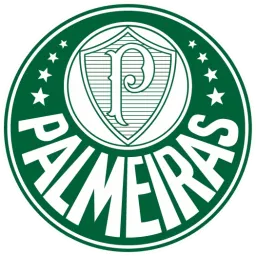 Palmeiras | 22 | 10 | 7 | 1 | 2 |
| 2 | 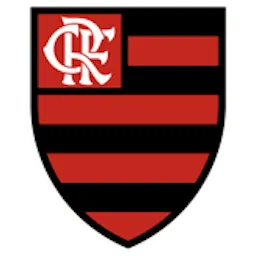 Flamengo | 21 | 10 | 6 | 3 | 1 |
| 3 | Cruzeiro | 20 | 10 | 6 | 2 | 2 |
| 4 | 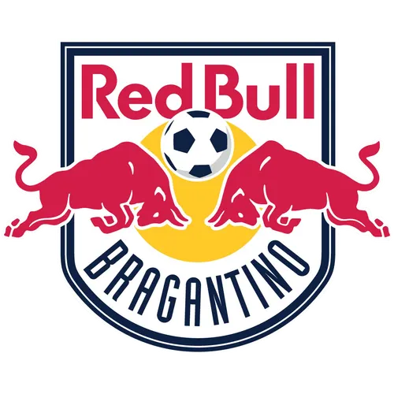 Bragantino | 20 | 10 | 6 | 2 | 2 |
| 5 | Fluminense | 17 | 10 | 5 | 2 | 3 |
| 6 | Ceará | 15 | 9 | 4 | 3 | 2 |
| 7 | 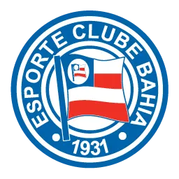 Bahia | 15 | 10 | 4 | 3 | 3 |
| 8 | Corinthians | 14 | 10 | 3 | 5 | 2 |
| 9 | Mirassol | 14 | 10 | 3 | 5 | 2 |
| 10 | Atlético-MG | 14 | 10 | 3 | 5 | 2 |
| 11 | 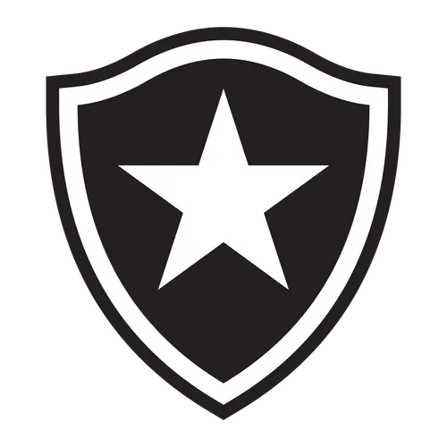 Botafogo | 12 | 9 | 3 | 3 | 3 |
| 12 | 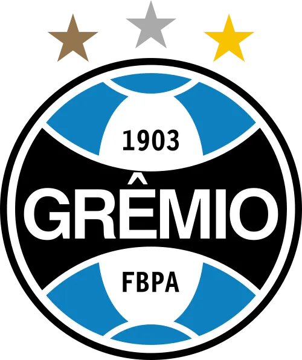 Grêmio | 12 | 10 | 3 | 3 | 4 |
| 13 | 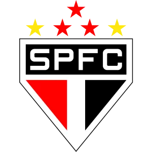 São Paulo | 12 | 10 | 2 | 6 | 2 |
| 14 |
 Internacional
Internacional
|
11 | 10 | 2 | 5 | 3 |
| 15 | 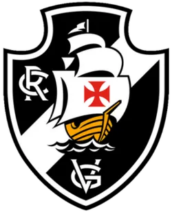 Vasco da Gama | 10 | 10 | 3 | 1 | 6 |
| 16 | 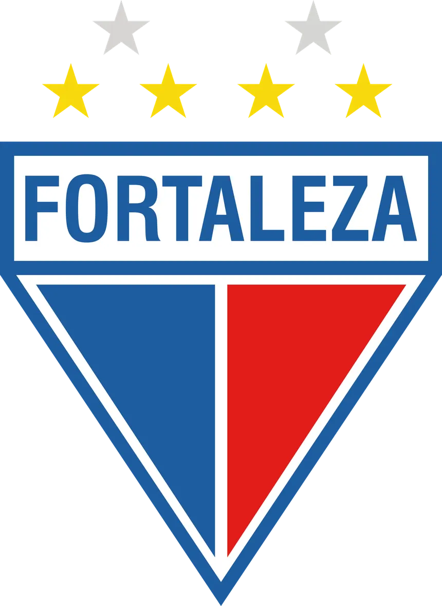 Fortaleza | 10 | 10 | 2 | 4 | 4 |
| 17 | Vitória | 9 | 10 | 2 | 3 | 5 |
| 18 | 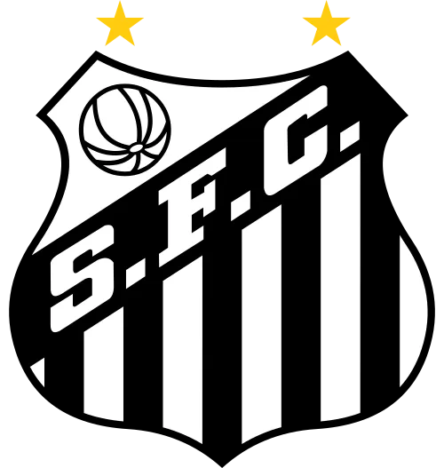 Santos | 8 | 10 | 2 | 2 | 6 |
| 19 | Juventude | 8 | 10 | 2 | 2 | 6 |
| 20 | 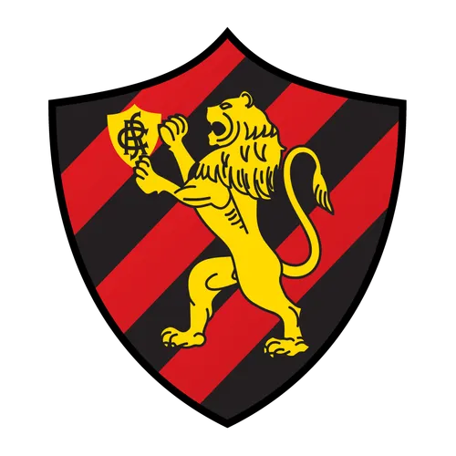 Sport | 3 | 10 | 0 | 3 | 7 |